Handle Mouse Events
To send mouse clicks to the cells we will need to intercept certain mouse actions in our LaserGame morph while the cursor is over the game board. We can register several interesting events for our game board SketchMorph and handle them within our LaserGame morph. We can intercept and process:
- mouse down
- mouse up
- mouse enter
- mouse leave
- mouse move while button down
- mouse move while button up
Modify the method we use to make the game board in our LaserGame morph so that we register an interest in some events. We also give the morph a name we can use for later submorph searching.
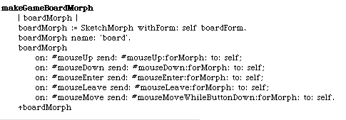We have to write all of those receiver methods too.
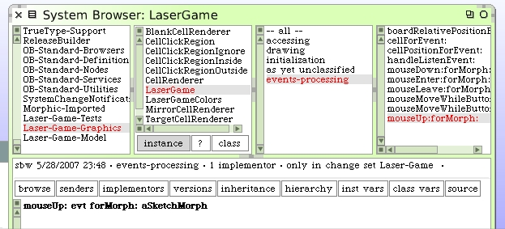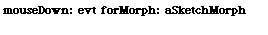 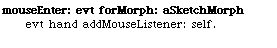
Note that we register an interest with the hand morph that we want to receive events from it while it is over the board. We also want to tell it when we are done listening.
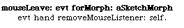The mouse down events are different. Ordinarily we only receive mouse move events when the mouse button is down. Hence, the funny name for our method.
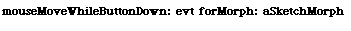By registering with the hand morph when it came over on top of our board morph, we will now be receiving messages from it too. We need to write support for that.
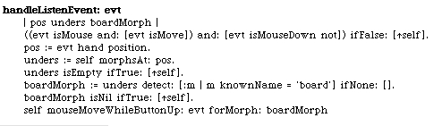This one is a little trickier since we will have to figure out if it's really over our board morph and then resend the event to the board morph.
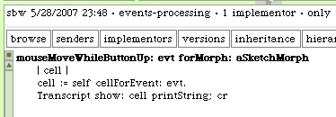This method is the most interesting for us to watch, once we have it working properly. For now we will write out which cell we find to the Transcript window. Don't try to do this with the new LaserGame morph just yet. Just fill-in the code pieces as we go. When we have enough in place we can try this one out.
There some pieces we still need.
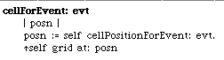 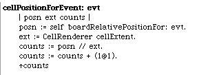 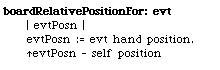Open up a Transcript window and a new LaserGame morph to try this out. When you move the mouse over the game board, the Transcript should report which cell you are over.
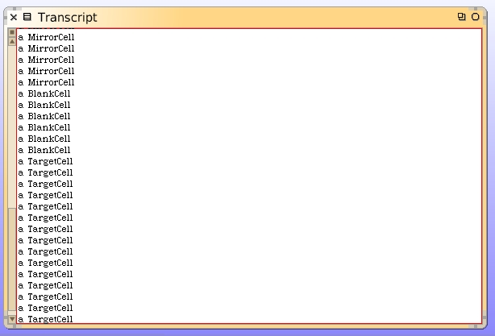Once you have verified this is working as expected, remove the Transcript code and save your image. This is a good breaking point.
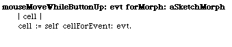